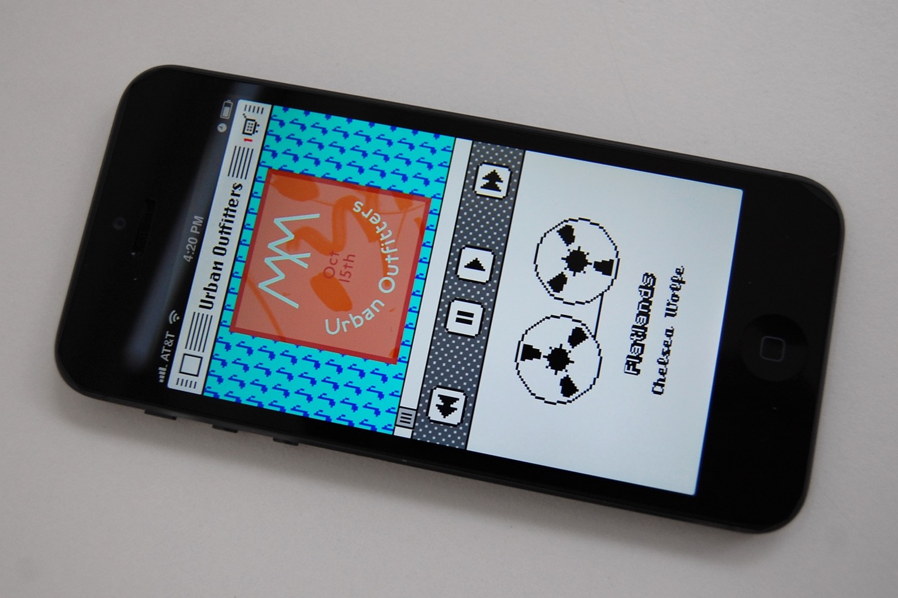

<!DOCTYPE html>
<title>Urban Outfitters App - Todd Heasley</title>
<meta name="viewport" content="initial-scale=1.0">
<meta name="og:image" content="https://toddheasley.github.io/uo-app.jpg">
<meta name="og:title" content="Urban Outfitters App - Todd Heasley">
<meta name="apple-itunes-app" content="app-id=358821736">
<link rel="stylesheet" href="default.css">
<header>
    <h1><a href="index.html">Todd&nbsp;Heasley</a></h1>
</header>
<main>
    <h1>Urban Outfitters App</h1>
    <h2><time>2012-2013</time></h2>
    <figure><a href="uo-app.jpg"></a></figure>
    <p>Native Cocoa Touch with classic Mac style for selvage denim pockets, designed by <a href="https://grayhood.com">Dan Gneiding</a></p>
    <figure><a href="uo-app.gif"></a></figure>
    <p><a href="https://apps.apple.com/app/id358821736"><span></span></a></p>
</main>
<footer>
    <p><a href="https://github.com/toddheasley">@toddheasley</a></p>
</footer>